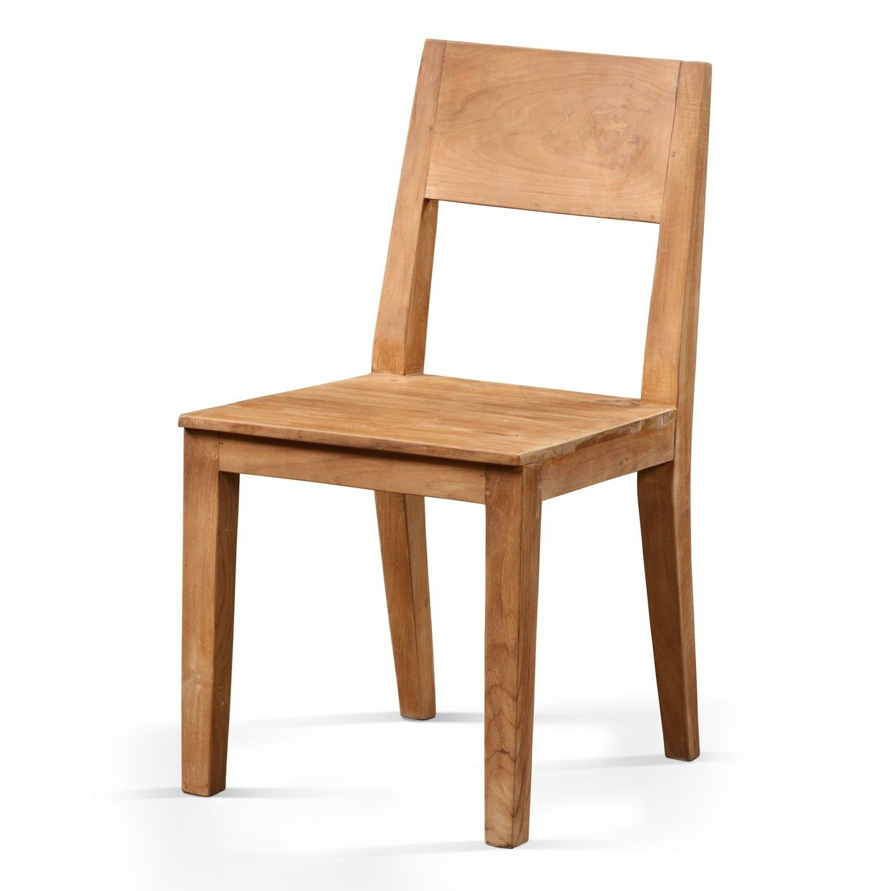

چند بار پیش آمده است که در وضعیتی مثل شیر سیرک گیر کنید؟ چند بار خواسته اید به چیزی برسید - مثلاً وزنتان را کم کنید عضله بسازید کسب و کاری راه بیندازید، مسافرت بروید - ولی با انبوهی از انتخابها مواجه شده اید و در آخر ذره ای پیشرفت نکرده اید؟ این مسئله همه جا - خصوصاً در موضوعات مرتبط با سلامتی تناسب اندام و پزشکی - صدق میکند که همه صاحب نظرند و احساس میکنند وظیفه اخلاقی شان است اوضاع را از آنچه هست پیچیده تر کنند نگاه که میکنی همه برنامه های تمرینی یکی از دیگری بهترند و هر متخصص تغذیه رژیم غذایی خود را بهترین رژیم میداند.
این موضوع مرا سردرگم میکند زیرا متخصصان هنوز درباره بهترین انتخاب به تفاهم نرسیده اند و من و شما که واقعاً دنبال بهبود زندگیمان هستیم بین انبوهی از اطلاعات متناقض سرگردان شده ایم نتیجه این که احساس میکنیم نمیتوانیم تمرکز کنیم یا روی چیز اشتباهی تمرکز میکنیم و این باعث افت پیشرفت ما میشود یعنی با وجود این که میتوانستیم بهتر شویم در وضعیت ثابتی باقی می مانیم .فکر میکنم اکنون زمان تغییر است. در ادامه خواهم گفت چطور
هر گاه دنیا صندلی اش را جلویتان تکان داد به خاطر بسپارید همه چیزی که لازم دارید فقط تعهد انجام یک کار است. در آغاز راه حتی لازم نیست موفق شوید، فقط باید شروع کنید. آغاز کردن پیش از احساس آمادگی از عادتهای افراد موفق است. بیشتر اوقات توانایی شروع کردن و متعهد بودن به انجام یک فعالیت همه چیزی است که برای بهبود تمرکزتان نیاز دارید. مشکل بیشتر مردم تمرکز نیست، تصمیم گیری است.
تا الآن شده است فعالیتی را انجام دهید که لازم بوده حتماً آن را به پایان برسانید؟ چه شد؟ بالأخره تا آخر آن را انجام دادید؟ شاید هم به روز دیگری موکولش کردید. همین که خودتان را مجاب کنید آن کار را انجام دهید یقیناً تا آخر انجامش میدهید به عبارتی برای پیشرفت سلامتی کار و زندگیتان نیاز نیست یاد بگیرید چطور بهتر تمرکز کنید باید یاد بگیرید چطور فعالیت مشخصی را انتخاب کنید و به انجام آن پایبند بمانید.
شما توانایی تمرکز دارید فقط نباید مثل شیر سیرک حواستان را بین چهار پایه صندلی تقسیم کنید. باید یک چیز را انتخاب کنید و چهار چشمی همان را بپایید. می خواهید هجده کیلو وزن کم کنید؟ خیلی هم خوب غذای سالم بخورید برای شروع هر چیزی که بسته بندی نشده خوب است و بیشتر ورزش کنید اطلاعات بیشتری لازم ندارید. نیازی نیست یاد بگیرید چطور روی چیزهای درست تمرکز کنید فقط به مبانی متعهد باشید. ابتدا شالوده عادت خوب را پی ریزی کنید بعداً کلی وقت برای پرداختن به جزئیات هست.
میخواهید مثل یک ورزشکار نخبه باشید؟ عالی رؤیاپردازی را کنار بگذارید و سعی کنید شبیه یکی از آنها زندگی کنید عادت کنید زودتر بخوابید برنامه روزانه خود را حول ورزش تنظیم کنید. لازم دیدید سایر تعهدات خود را کنار بگذارید. اگر هدفتان واقعاً برایتان مهما است. از زل زدن به حواس پرتی ها اجتناب کنید و فقط به چیزی که باید متعهد باشید
می خواهید کسب و کاری راه بیندازید؟ شما میتوانید و البته قطعاً سختی های زیادی متحمل می شوید همه کارآفرینان دچار تردید میشوند. یاد گرفتن راهبردهای جدید لازم نیست. فهم روشهای افزایش تمرکز لازم نیست کافی است متعهد باشید تا مراد دلتان اتفاق بیفتد. شما قدم اول را بردارید و مطمئن باشید موقعش که برسد خودتان میفهمید قدم دوم را چگونه بردارید. همه ما میتوانیم تمرکز کنیم به شرط آن که بتوانیم تصمیم بگیریم چه کاری مهم است و به چه کاری باید متعهد بمانیم تنها انتخاب غلط این است که انتخابی نداشته باشید.
زندگی صحنه تمرین نیست بدانید یا نه شما از قبل روی صحنه هستید. همه ما روی صحنه هستیم. بیشتر اوقات بی سرو صدا گوشه ای مینشینیم به صندلی ای که روبه روی ما قرار گرفته است خیره میشویم و در سکوت با خودمان کلنجار میرویم که کدام پایه مهم است. اما نباید این طور باشد. اگر میخواهید جایی بروید کاری انجام دهید یا کسی شوید تصمیم بگیرید. همین که در مورد هدفتان با خودتان به تفاهم برسید بقیه دنیا هم برای تحقق آن هدف به شما کمک میکند یا از سر راه تان کنار میرود در هر دو حال ضرر نکرده اید.
نباید همه کارها را با هم انجام دهید فقط یک کار وجود دارد که همین الآن باید انجام دهید؛ کاری که شما را فرامی خواند؛ کاری که برایتان مهم است؛ کاری که مقدر شده به دست شما انجام شود. من نمیدانم آن کار چیست ولی شما میدانید صندلی را از سر راهتان کنار بزنید و آن کار را انت خاب کنید.
